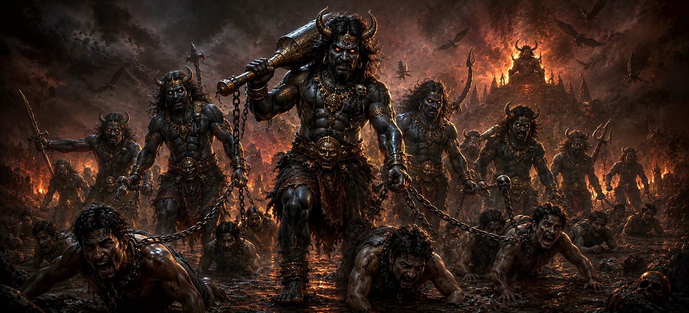

The Path to Hell and the Messengers of Yama
Building upon the classification of transgressions in Chapter 6, Chapter 7 shifts its focus to the immediate aftermath of physical death. It chronicles the transition of the embodied soul as it sheds its mortal frame and embarks on the long, grueling journey to Yamaloka—the court of divine justice.
The chapter vividly describes the path traversed by unrighteous souls, guided sternly by Yamadutas—the emissaries of Yama (Dharma Raja). This journey serves as a psychological and spiritual mirror, where the soul directly experiences the weight of its unatoned deeds before reaching the court of judgment.
Far from being a mere tale of fear, these descriptions function as a urgent wake-up call, emphasizing the absolute necessity of righteous living, spiritual discipline, and sincere repentance while still in the physical world.
Chapter 7 Highlights
Departure of Soul
Describes the detachment of the subtle body from the physical shell.
The Perilous Path
Outlines the arduous conditions faced by sin-burdened souls on the road.
Role of Yamadutas
Introduces the strict, impartial guardians of cosmic order and law.
Value of Rites
Explains how funerary offerings provide relief during the journey.
Approach to Yamaloka
Depicts the grand gates where Chitragupta reviews the cosmic ledger.
Gateway to Realms
Prepares the reader for Chapter 8's tour of specific hellish hells.
Core Topics in This Chapter
- 01 The Moments of Death and Soul's Release →
- 02 The Arrival and Form of Yamadutas →
- 03 The Landscape of the Path to Yamaloka →
- 04 Contrast Between the Virtuous and Sinful Journeys →
- 05 The Role of Pinda and Funeral Offerings →
- 06 Crossing the Dreaded River Vaitarani →
- 07 The Unfailingly Accurate Record of Chitragupta →
- 08 The Majestic Court of Lord Yama (Dharma Raja) →
- 09 Post-Mortem Remorse and Spiritual Realization →
- 10 Transition to Chapter 8: The Specific Hells →
The Moments of Death and Soul's Release
Chapter 7 opens with a precise description of the physical body's dissolution. As vital life forces (Prana) retreat from the limbs, the jiva (embodied soul) gathers its subtle body—comprising mind, intellect, memory, and ego—and leaves the vessel behind.
For those bound closely to material attachments and unpurified sins, the moment of exit is filled with confusion, anguish, and a desperate struggle to cling to the fading physical reality.
This moment demonstrates the immediate consequence of lifetime habits: what one held in mind throughout life dictates the exact state of consciousness at death.
The Arrival and Form of Yamadutas
Immediately following physical death, emissaries from the realm of Lord Yama arrive to assume custody of the soul. For the sinful, the Yamadutas appear fierce, imposing, and daunting, reflecting the grave nature of unatoned karma.
The scripture emphasizes that Yamadutas are neither cruel nor malicious; they are impartial officers of Cosmic Law (Dharma). They treat every soul strictly in accordance with its karmic record without favor or bias.
Binding the soul in a subtle sheath (Yatana Sharira), they initiate the mandatory journey toward Yamaloka.
The Landscape of the Path to Yamaloka
The route spanning the distance between the earthly realm and Yamaloka is described as thousands of leagues long, devoid of shade, water, or rest stops for those who lived without righteousness.
Sinful travelers experience extreme weather—scorching heat, icy winds, sharp gravel, and impenetrable darkness—each element reflecting their own past insensitivity to others' suffering.
This landscape is essentially an exteriorized projection of the soul's own unresolved negative impressions, compelling it to face the burden of its past actions.
Contrast Between the Virtuous and Sinful Journeys
In vivid contrast to the ordeal of the unrighteous, Chapter 7 highlights the peaceful passage of righteous and devoted souls. Those who practiced truth, charity, and devotion experience a pleasant and swift transition.
Virtuous souls are greeted by radiant messengers, provided comfortable conveyances, and shaded by fragrant divine trees, making their journey to the higher realms peaceful and inspiring.
This sharp dichotomy reminds the reader that the afterlife experience is not arbitrary; it is the natural, perfectly matched harvest of one's own chosen seeds.
The Role of Pinda and Funeral Offerings
The chapter highlights the vital spiritual link between the living and the deceased. Rites such as Shraddha, offering of rice balls (Pinda), and water oblations performed by family members actively sustain the departing soul.
These sacred offerings generate subtle nourishment, providing strength, relief from exhaustion, and protection to the travelling jiva during its long transit.
This underscores the deep Vedic emphasis on ancestral duties (Pitri Rina) and the power of loving intentions directed toward departed lineage.
Crossing the Dreaded River Vaitarani
A major landmark along the road to Yamaloka is the terrifying River Vaitarani. Swirling with hot, turbulent currents, it presents an impassable obstacle to those laden with selfish acts.
However, souls who performed charitable acts during their earthly lives—particularly those who gifted cows (Go-dana), food, or water to the needy—find a safe vessel appearing to carry them effortlessly across.
The river represents the boundary between earthly ties and final judgment, testing the true weight of one's generous deeds.
The Unfailingly Accurate Record of Chitragupta
Upon nearing Yamaloka, souls approach the presence of Chitragupta, the celestial accountant of human deeds. He maintains the Agrasandhani—the record book detailing every thought, word, and deed performed across all lifetimes.
No secret act remains hidden from this ledger; every silent virtue and unconfessed transgression is registered with absolute clarity.
This highlights the truth that consciousness itself records everything, making self-deception completely impossible in the final reckoning.
The Majestic Court of Lord Yama (Dharma Raja)
At the culmination of the path stands the great assembly hall of Lord Yama. Far from being a mere tormentor, Yama is revered as Dharma Raja—the King of Righteousness and embodiment of cosmic balance.
In his court, judgment is delivered with absolute justice, untouched by anger, hatred, or favoritism. Punishments or rewards are assigned strictly to purify the soul and restore moral equilibrium.
Understanding Yama as Dharma Raja transforms our perspective of death from terrifying end to a necessary step in cosmic justice.
Post-Mortem Remorse and Spiritual Awakening
As the soul witnesses its life record reviewed in the court of Yama, it experiences profound remorse for wasted opportunities, neglected spiritual duties, and harm caused to others.
Stripped of worldly status, wealth, and physical power, the soul sees clearly that only spiritual merit (Punya) and sincere devotion to Lord Shiva possess enduring value.
This acute realization begins the soul's inner purification process, preparing it to undergo its required karmic experience.
Transition to Chapter 8: The Specific Hells
Having traversed the arduous path, crossed River Vaitarani, and stood before the court of Yama, the soul now receives its specific destination based on the balance of its actions.
For those requiring deep purification of severe unatoned sins, the gates to specific hellish realms (Narakas) are opened.
This seamlessly sets up Chapter 8, which provides a detailed examination of the distinct realms of hell, their specific environmental conditions, and the corrective purifications assigned to each.
Key Teachings of Chapter 7
Impermanence of Body
The physical vessel is temporary; cultivate the eternal subtle self.
Impartial Cosmic Law
Yamadutas and Lord Yama enforce karma with absolute, objective justice.
Power of Generosity
Acts of charity and food/water donation ease the soul's transit.
Unfailing Records
Chitragupta's ledger accurately holds every silent thought and act.
Ancestral Duties
Funerary rites provide direct nourishment and comfort to departed ancestors.
Shiva Refuge
Remembering Lord Shiva dissolves fear of death and guarantees safe passage.
Spiritual Reflection
Chapter 7 reminds us that death is not an abrupt end, but a transition into the clear light of divine truth. On the path to Yamaloka, all earthly illusions—titles, wealth, and physical appearance—fall away, leaving only the pure quality of our actions and state of consciousness. Yamadutas are not instruments of anger, but servants of cosmic law ensuring that balance is preserved across the universe. By cultivating generosity, truthfulness, and unwavering devotion to Lord Shiva during our lifetime, we ensure that our final journey becomes a pathway of peace, light, and liberation.
Living the Message of Chapter 7
Integrate Chapter 7 into your life by maintaining a conscious awareness of your actions every day. Practice regular charity—offering food, water, or help to those in need—knowing that selflessness builds spiritual light.
Honor your departed lineage through respectful remembering and traditional rites. Above all, anchor your mind in Mahadeva's name, transforming the fear of mortality into unwavering spiritual peace.
Key Spiritual Concepts
The subtle realm governed by Lord Yama where departed souls receive karmic evaluation.
The stern, impartial emissaries of Yama responsible for conducting subtle bodies to judgment.
The temporary subtle body granted to souls to experience post-mortem purification.
The boundary river in the subtle world crossed smoothly through past charity and virtue.
The divine accountant who records every action, word, and thought in the Agrasandhani.
The epithet of Lord Yama reflecting his role as King of Righteousness and Cosmic Order.
Chapter Summary
Uma Samhita Chapter 7 details the soul's journey after physical death, illustrating the departure of the subtle body and its escorting by the Yamadutas. It presents the contrasts between the arduous, painful road faced by unrighteous souls and the smooth, pleasant transit experienced by the virtuous. The chapter emphasizes the importance of ancestral offerings (Shraddha) in alleviating post-mortem suffering, describes the crossing of River Vaitarani, and depicts the court of Chitragupta and Lord Yama (Dharma Raja). By highlighting that judgments are administered with pure cosmic fairness, Chapter 7 prompts deep spiritual reflection and sets the stage for Chapter 8's detailed exploration of the various hellish realms.
Frequently Asked Questions
① What is the core subject of Uma Samhita Chapter 7?
Chapter 7 describes the departure of the soul from the physical body, the journey along the arduous path to Yamaloka, and the role of Yamadutas as impartial agents of cosmic justice.
② Why is the path to Yamaloka described as terrifying?
The path acts as an immediate reflection of one's unatoned sins, featuring severe climate conditions, rough terrain, and intense fatigue to highlight the inescapable nature of karma.
③ Who are the Yamadutas?
Yamadutas are the stern messengers of Lord Yama, tasked with escorting departed souls to the realm of judgment in strict accordance with their individual karmic records.
④ How do funerary rites (Shraddha) assist the departed soul?
The text explains that rites and oblations offered by loving family members provide essential sustenance and relief to the subtle body during its long post-mortem transit.
⑤ How does Chapter 7 lead into Chapter 8?
Chapter 7 details the journey across the boundary realm, setting up Chapter 8's detailed examination of the specific hellish realms (Narakas) and their corresponding corrective punishments.
“He who takes constant refuge in Mahadeva walks the dark paths of transit bathed in divine light, fearing no messenger and knowing no dread.”
Continue Through Uma Samhita
Chapter 7 outlines the post-mortem journey and the court of Lord Yama. Advance to Chapter 8 to explore the specific realms of hell and the precise corrective cleansings assigned to various karmic actions.